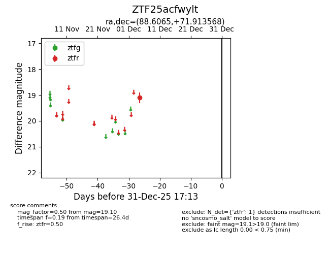
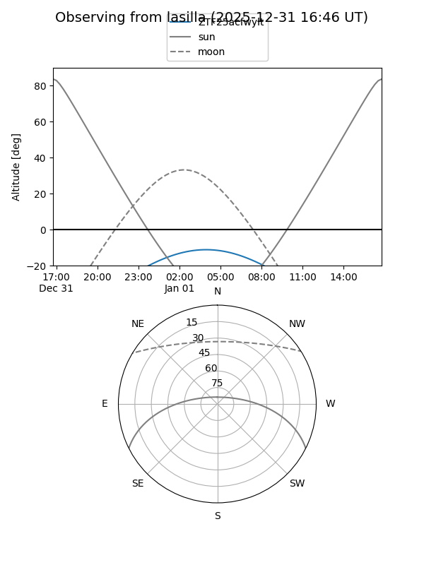
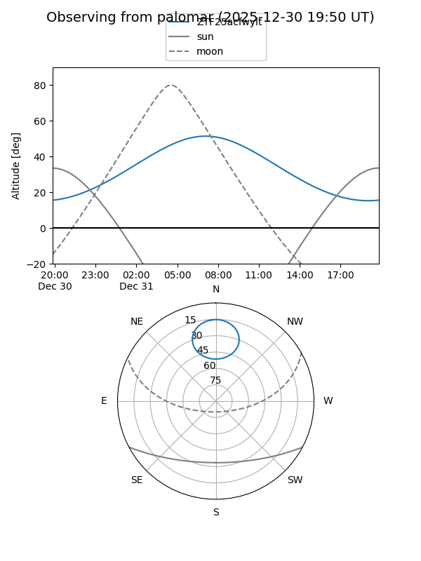

ZTF25acfwylt
Target ZTF25acfwylt at 2025-12-31 18:00
Aliases and brokers:
FINK: link
Lasair: link
ALeRCE: link
alt names
ZTF25acfwylt (ztf,fink_ztf)
Coordinates:
equatorial (ra, dec) = 88.6065,+71.91357
equatorial (HMS+DMS) = 05:54:25.56,+71:54:48.85
galactic (l, b) = (141.7916,+21.43391)
Flags:
Photometry:
last ztfr=19.10
1 ztfr detections
Lightcurve

Visibility


Additional plots